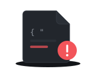

Ember
Graphite surfaces, one warm accent, status colours used only for status. Elevation comes from a lighter surface step, not from shadows; shadows are only for things that float (menus, modals, toasts). Every interactive component below is shown in its default, hover, focus, pressed and disabled state. The forced states are generated from the real CSS rules, so this page can't drift from the app.
Colour
tokens.css · contrast checked against --s1
Typography
Segoe UI Variable Display/Text, Bahnschrift for numbers, Cascadia Mono/Consolas for flags
H1 26 · Customization Editor
H2 20 · Recent presets
H3 16 · Card title
Spacing, radius, shadow
4 px grid
Navigation
Sidebar items. The active item gets the accent bar and a surface step.
Buttons
Primary is used once per view, for the main action.
Inputs
Text, search, select
Dropdown menu
Opens below its trigger, closes on Esc or outside click
Slider, switch, checkbox
Cards
Hover lifts 2 px; selected uses the accent line
Badges & status
Text plus icon, never colour alone
Tooltip
350 ms delay, also on keyboard focus
Modal
Focus is trapped; Esc and the scrim close it unless work is running
Replace every flag in Fishstrap?
Replace mode removes the 3 flags that aren't in this profile. A backup is made first.
You can restore it from Diagnostics › Recovery.
Notifications
Bottom-right toasts, 5 s, pause on hover
12 flags written and read back. Restart Roblox to load them. In-game effect not verified.
Changes load next time Roblox starts.
Access denied. Nothing changed; your backup is intact.
This Fleasion profile swaps assets. Firetier keeps it but can't apply it.
Loading
Skeletons for first load, spinners inside buttons, bars for known progress
Empty & error states
Hand-made SVG art, one per context
No profiles yet
Start from a preset or import a FastFlag JSON.
Nothing matches “sky”
Try a flag name or clear the filters.

Fishstrap's file can't be read
It isn't valid JSON (line 4). Firetier won't overwrite it until you choose to.